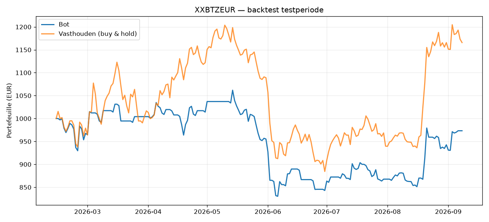

Een machine-learning bot die cryptokoersen analyseert en koop/verkoopsignalen geeft. Hieronder: live marktindicatoren, de backtest-resultaten en de roadmap naar live trading.
Testperiode: 207 dagen (maart t/m september 2026). Kosten en slippage zijn meegenomen (0,25% + 0,05% per transactie).
| Strategie | Rendement | Max. daling | Trades | Winnaars |
|---|---|---|---|---|
| AI-bot | −2,7% | −21,8% | 37 | 22 |
| Vasthouden (buy & hold) | +16,6% | −26,5% | — | — |
Eerlijk rapport van de eerste versie: de bot verslaat vasthouden nog niet — het model overfit nog (97% op traindata, 52% op testdata ≈ muntgooien). Dit is het startpunt om te itereren, en die iteratielogboek staat hieronder.
